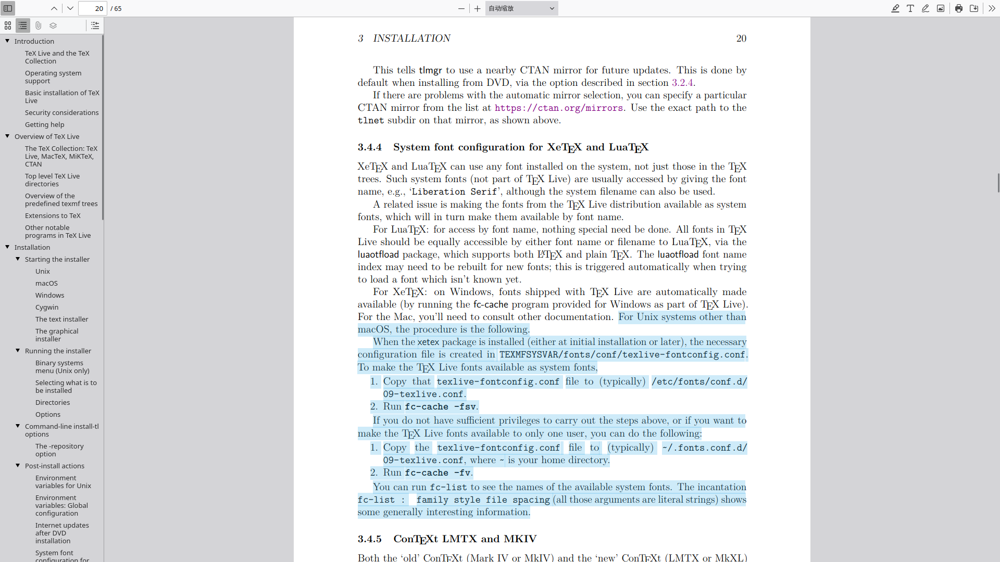

Table of Contents
1. 在ArchLinux上给org-mode添加渲染中文LaTeX片段的方法
1.1. 折腾动机
由于 因为自己在过去写的一些在org-mode里渲染LaTeX中文片段的函数，实在是写得过于另类猎奇 (文章最后有说怎么实现的，总之就是非常另类，主打一个能用就行)
同时 因为自己没有使用 extpfeil 宏包，反而是转而使用甚至滥用下面这种抽象到炸裂的原生双向箭头
导致当org文件出现大量的 \!\!\! 时，自己的Emacs在解析卡到爆炸💥（是的，即使是 feature/igc 也受不住那种，即使用了 narrow 也还是卡卡的那种。）
我必须承认表示这就是我的责任，别想多了
1.2. 方案选择
询问GPT后，GPT说，卡顿的原因主要是 [输出了png而非svg] 与 [符号过多] 的问题。那么接下来就是 问题1: 输出了png而非svg 与 问题2: \!\!\!的符号过多
1.2.1. 问题1: 输出了png而非svg
- svg 的优势之处
GPT 回答说，使用
SVG的好处是- SVG 是矢量图，渲染成本低，不需要用PNG的像素点描述，而是SVG使用路径描述，所以不会占用过多的显存或CPU，SVG渲染成本低，SVG适合大量公式的方案
- 现在的 Emacs 本身对 SVG 的支持较好
- SVG 不需要缓存大量图片，当公式特别多的时候，处理 SVG 需要的内存小，加载快
所以使用 SVG 而非 PNG，在我自己这里，迫在眉睫。
- 输出 能渲染中文LaTeX 的 SVG 的方法
在 org-mode 里，默认支持 dvipng、dvisvgm、imagemagick 三种渲染 LaTeX 的方式，它们
输出可显示图片(PNG 或 SVG)的方案如下序号 方案 最终输出内容 1 dvipng: LaTeX > .dvi > dvipng > PNGPNG 2 dvisvgm: LaTeX > .dvi > SVGSVG 3 imagemagick: LaTeX > DVI > PostScript > ImageMagick (convert) > PNGPNG 然后 org-mode 默认使用的是 dvipng(PNG) 的原因是
因为在早期的 Emacs，Emacs 24 几乎不支持 svg，Emacs 25-25 有支持但不稳定。
一直到 Emacs 27+ 才稳定支持
所以当初为了可以使用可以实现就足够了，同时现在还能向下兼容过去已经养成的习惯(毕竟适合自己的才是最好的) 于是默认设置 dvipng 为默认渲染 LaTeX片段 的方式
虽然
dvisvgm可以输出SVG但 问题的关键是: 无论是不是 dvisvgm(SVG)，这三种方式都默认不支持 [中文LaTeX片段] 的渲染(也许加宏包可以完成，但我自己是真的怎么找都找不到，而且我自己实在是不想折腾了)于是使用对中文支持友好的
XeTeX(我自己选择的)与LuaTeX(它们的安装方式都在sudo pacman -S texlive里面) - 让 XeTeX 输出 SVG
在 XeTeX 里面 一定是PDF转其它 不存在XDV转其它 (XDV，就是DVI的XeTeX包装版，虽然XDV看上去是DVI的变种，但是实际上XDV还是PDF的实现方法，并不能完成 XDV to 其它的方法，所以 只能是PDF to 其它*(*反正我自己目前了解到的是这样))
所以在 PDF转其它 的方案下，就需要 pdf2svg 此依赖，在 archlinux 下，可以通过
# pdf2svg依赖，来让XeTeX，完成PDF转SVG的方案 sudo pacman -S pdf2svg
然后执行下面，如果能看到 114514.svg 就是成功的。
# sh xelatex -no-pdf -output-directory . 114514.tex # 114514.tex 生成 114514.xdv xdvipdfmx -E -o 114514.pdf 114514.xdv # 114514.xdv 直接转换成 114514.pdf pdf2svg 114514.pdf 114514.svg # 114514.pdf 再转换成 114514.svg
然后下一步到 让 XeTeX 支持字体
- 让 XeTeX 支持 中文字体和西文字体混用
首先有 el 的实现
;; ======================================== ;; 使用 xelatex 渲染 latex-fragment ;; ======================================== (add-to-list 'org-preview-latex-process-alist '(xelatex-chinese :programs ("xelatex" "pdf2svg") :description "XeLaTeX with Chinese support (PDF > SVG)" :message "You need to install: xelatex and pdf2svg." ;; 方案: pdf 转 svg :image-input-type "pdf" :image-output-type "svg" :image-size-adjust (1.7 . 1.5) ;; 字体: 中文 Noto Sans CJK SC 1.3倍, 西文 CMU Bright 1.0倍 :latex-header "\\documentclass[11pt]{standalone} \\usepackage{fontspec} \\setmainfont{Noto Sans CJK SC}[Scale=1.3] \\setsansfont{CMU Bright}[Scale=1.0] \\usepackage[usenames]{color} \\usepackage{amsmath} \\usepackage{mhchem} \\usepackage{extpfeil} \\pagestyle{empty}" :latex-compiler ("xelatex -interaction nonstopmode -output-directory %o %f") ;; 依赖: pacman -S pdf2svg :image-converter ("pdf2svg %f %O"))) ;; 永久设置org-preview-latex的默认进程为上面的xelatex-chinese (setq org-preview-latex-default-process 'xelatex-chinese)然后在这里，需要详细解释，因为 这涉及到一个 archlinux 字体存放所有目录的修改 问题 (我自己只测试过在archlinux发行版上是这样的，并不知道其它发行版的字体配置文件是不是在
/etc/fonts/下)\\setmainfont{Noto Sans CJK SC}[Scale=1.3] \\setsansfont{CMU Bright}[Scale=1.0]在中文LaTeX片段的 字体选择方案: 中文字体 + 西文字体 里，GPT 回答说
序号 中文字体（CJK） 主要字体（西文部分） 适用场景 1 Source Han Serif CN CMU Serif 适合 正式论文、书籍 2 Source Han Sans CN CMU Sans Serif 适合 PPT、现代排版 3 Noto Serif CJK SC Times New Roman 适合 英文学术文章 4 FandolSong CMU Serif 默认 LaTeX 兼容性好 5 Noto Sans CJK SC Computer Modern Bright 现代风格、学术报告 我选择了方案5，中文使用Noto Sans CJK SC[1.3倍]、西文使用Computer Modern Bright[1.0倍] （其中，倍数的调整是在LaTeX导言区里面调整，这里仅作说明解释）
因为在 Emacs 里 org-mode使用了TeX引擎的内置字体 并且GPT回答说，这是使用了 Computer Modern字体，很漂亮 来完成 西文LaTeX片段的渲染的
所以我自己的字体方案是，西文最好是 Computer Modern 就是最好的。
然后关于这些字体的安装，首先要说明的是，这些字体已经在 安装好texlive完全体版后一律附赠了
如果都是使用 archlinux 使用 pacman 来安装的话，它会在
/usr/share/texmf-dist/fonts/这里有安装texlive附赠的所有的字体- 省流版
- 详细版
前提声明: 我自己只测试了 archlinux 是这样的，我自己并不知道其它发行版也是不是这样。
 (其中，手册是命令行执行
texdoc texlive得到的)而且这里也有详细的解释
<!-- bash --> <!-- cat /etc/fonts/fonts.conf --> <!-- DO NOT EDIT THIS FILE. IT WILL BE REPLACED WHEN FONTCONFIG IS UPDATED. LOCAL CHANGES BELONG IN 'local.conf'. The intent of this standard configuration file is to be adequate for most environments. If you have a reasonably normal environment and have found problems with this configuration, they are probably things that others will also want fixed. Please submit any problems to the fontconfig issue tracking system located at fontconfig.org Note that the normal 'make install' procedure for fontconfig is to replace any existing fonts.conf file with the new version. Place any local customizations in local.conf which this file references. Keith Packard -->所以做法就是，先创建文件
sudo vim /etc/fonts/local.conf，并添加以下的内容(而且<?xml version="1.0"?>必须在文件的第1行)<?xml version="1.0"?> <!DOCTYPE fontconfig SYSTEM "fonts.dtd"> <fontconfig> <!-- Font directory list --> <!-- 如果只添加安装texlive附赠的单独一种字体 (Compter Modern Unicode)，就弄到对应的子文件夹 --> <dir>/usr/share/texmf-dist/fonts/opentype/public/cm-unicode</dir> <!-- 如果只添加安装texlive附赠的所有字体，就弄到根文件夹 --> <dir>/usr/share/texmf-dist/fonts/opentype</dir> </fontconfig>
然后执行
fc-cache -fsv就会看到，就说明安装好了 (我这里是只安装了 CMU 这一个字体)Font directories: /usr/share/fonts /usr/local/share/fonts /usr/share/texmf-dist/fonts/opentype/public/cm-unicode .......................................................于是，查看所有安装好的 CMU 字体
# bash fc-list | grep '^/usr/share/texmf-dist/fonts/opentype/public/cm-unicode/'
然后接下来回到 Emacs 的配置，于是就有
;; ======================================== ;; 使用 xelatex 渲染 latex-fragment ;; ======================================== (add-to-list 'org-preview-latex-process-alist '(xelatex-chinese :programs ("xelatex" "pdf2svg") :description "XeLaTeX with Chinese support (PDF > SVG)" :message "You need to install: xelatex and pdf2svg." ;; 方案: pdf 转 svg :image-input-type "pdf" :image-output-type "svg" :image-size-adjust (1.7 . 1.5) ;; 字体: 中文 Noto Sans CJK SC 1.3倍, 西文 CMU Bright 1.0倍 :latex-header "\\documentclass[11pt]{standalone} \\usepackage{fontspec} \\setmainfont{Noto Sans CJK SC}[Scale=1.3] \\setsansfont{CMU Bright}[Scale=1.0] \\usepackage[usenames]{color} \\usepackage{amsmath} \\usepackage{mhchem} \\usepackage{extpfeil} \\pagestyle{empty}" :latex-compiler ("xelatex -interaction nonstopmode -output-directory %o %f") ;; 依赖: pacman -S pdf2svg :image-converter ("pdf2svg %f %O"))) ;; 永久设置org-preview-latex的默认进程为上面的xelatex-chinese (setq org-preview-latex-default-process 'xelatex-chinese)就可以生效了，接下来打开 GNU Emacs，然后
执行 org-latex-preview或按下 C-c C-x C-l就可以渲染所有的中文西文混合的LaTeX片段了
- 省流版
1.2.2. 问题2: \!\!\!的符号过多
造成这样的原因 仅仅只是我过去过于懒惰导致的，不愿意加宏包，导致非常夸张的编辑卡顿问题
方法就是加入宏包就是了: 在上面的 xelatex-chinese 加入 extpfeil 宏包，并且在cdlatex里加入类似的快速指令，比如 ae, ar, al 等(这个自己设置哈！)
("ae" "" "\\stackrel{\\text{ ? }}{\\underset{\\text{ }}{\\xLeftrightarrow{\\hspace{3cm}}}} " cdlatex-position-cursor nil nil t)
("al" "" "\\stackrel{\\text{ ? }}{\\underset{\\text{ }}{\\xLeftarrow{\\hspace{3cm}}}} " cdlatex-position-cursor nil nil t)
("ar" "" "\\stackrel{\\text{ ? }}{\\underset{\\text{ }}{\\xRightarrow{\\hspace{3cm}}}} " cdlatex-position-cursor nil nil t)
于是一切就 OK 了
1.3. 另类实现方法（千万别学！要渲染中文LaTeX片段请看上面！）
先设置一个 xelatex-chinese 的自定义设置
;; ========================================
;; 使用 xelatex 渲染 latex-fragment
;; ========================================
(add-to-list 'org-preview-latex-process-alist
'(xelatex-chinese
:programs ("xelatex" "convert")
:description "XeLaTeX with Chinese support dvi > png"
:message "you need to install the programs: xelatex and divpng."
:image-input-type "pdf"
:image-output-type "png"
:image-size-adjust (1.7 . 1.5)
:latex-header "\\documentclass[11pt]{standalone}
\\usepackage{fontspec}
\\setmainfont{Source Han Sans CN}
\\setsansfont{Source Han Sans CN}
\\usepackage[usenames]{color}
\\usepackage{amsmath}
\\pagestyle{empty}"
:latex-compiler ("xelatex -interaction nonstopmode -output-directory %o %f")
:image-converter ("convert -density 90 -background '#FFFFFF' -flatten -quality 100 %f %O")))
再设置一个如果在LaTeX片段中遇到中文，就 需要自己手动按下快捷键来执行函数 的函数
;; =======================================
;; 动态选择引擎来渲染
;; =======================================
(defun kivnn/format-org-latex-preview-with-utf8 ()
"渲染在org-mode下渲染含有utf-8字符的LaTeX片段之前的格式化准备"
(interactive)
;; 找到左边界
(let ((thing (thing-at-point 'line t)))
(if (and thing (string-match (concat variable-latex-fragment-left-bound ".*" variable-latex-fragment-right-bound) thing))
(search-backward variable-latex-fragment-left-bound nil t)
(message "no such equation, please check again...")))
(forward-char 2)
(delete-all-space)
;; 找到右边界
(let ((thing (thing-at-point 'line t)))
(if (and thing (string-match (concat variable-latex-fragment-left-bound ".*" variable-latex-fragment-right-bound) thing))
(search-forward variable-latex-fragment-right-bound nil t)
(message "no such equation, please check again...")))
(backward-char 3)
(delete-all-space))
(defun kivnn/org-latex-preview-with-utf8 ()
"在org-mode下渲染含有utf-8字符的LaTeX片段"
(interactive)
(let* ((latex-code (thing-at-point 'line t))
(is-utf8 (and latex-code
(string-match (concat variable-latex-fragment-left-bound ".*" variable-latex-fragment-right-bound) latex-code)
(string-match-p "[^\x00-\x7F]" latex-code))))
(if is-utf8
;; 如果包含 UTF-8 字符，就使用 xelatex-chinese 引擎
(progn
(setq org-preview-latex-default-process 'xelatex-chinese)
(message "目前使用了xelatex-chinese引擎渲染此LaTeX片段"))
;; 如果不包含 UTF-8 字符，就使用 dvipng、dvisvgm、imagemagick 引擎
(setq org-preview-latex-default-process 'dvipng)
(message "目前使用了org-mode默认的dvipng、dvisvgm、imagemagick引擎渲染此LaTeX片段"))
(org-latex-preview)
;; 每次执行完毕后都恢复为 dvipng、dvisvgm、imagemagick 引擎
(setq org-preview-latex-default-process 'dvipng)
(message "Creating Latex previews in section...(and recover dvipng...) done.")))
(defun kivnn/render-latex-fragment-utf8 ()
"在org-mode下渲染含有utf-8字符的LaTeX片段的组合函数"
(interactive)
(kivnn/format-org-latex-preview-with-utf8)
(kivnn/org-latex-preview-with-utf8))
缺点（用到现在更换了以后我才明白，这有多不方便，这有多么恶心 ´_>）
- 必须自己手动一个一个按 \\( 光标必须放在此上下文范围里面，然后再按下快捷键执行 \\) 更换成最上面的实现后，我才发现这有多么不方便 (´_>)
- 必须自己实现 \\(删除左边界空格 删除右边界空格\\) 的函数，否则就会出现 LaTeX片段自带空格 的情况 (´_>)
- 如果因为什么事情，要重新渲染所有LaTeX片段的话，那么将光标放在一个一个的 \\( \\) 范围里面手动按快捷键，按得人都麻了。我以为以前这样就是最完美的，但是现在才知道以前有多么不方便呢 (´_>)